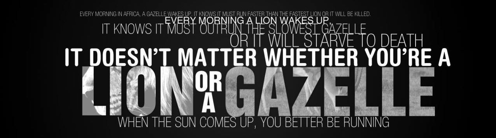

Ola amigos!
I am Saumya Gautam
And here is all I've got to tell you
About me
New to the Tech-World
A proud alumni of City Montessori School, Lucknow.
Presently in National Institute of Technology, Patna.
Pursuing B.Tech in Information Technology.
"Because life is too short to fret over things, so be an opportunist

# Conquer evil by good and anger by love.
# Civility costs nothing but buys everything.
# There are some defeats more triumphant than victories.
# The best way to predict future is to create it.
# World piece can be achieved when power of love replaces the love of power.
# Not in the clamor of the crowded street,
Not in the shouts and fiery street,
But in ourselves are triumph and defeat.
Sings. Because music is the food for soul.
A Bibliophile. My favourite books are :-
1. Protecting Amy by Susan Page Davis (genre- classics)
2. Angels & Demons by Dan Brown (genre- thriller)
3. The Fourth Realm Trilogy by John Twelve Hawks (genre- science fiction)
4. Malgudi Days by R.K. Narayan (short stories)
Foodie. Also loves to cook.
Amateur Photographer.
Would love to travel the world. Dream Destination- Norway
Loves dogs. The world would have been a better place if everyone had a heart like the dogs.
Address
202, H.S. Square Apartments,
Blunt Square, Durgapuri,
Lucknow - 226004
Uttar Pradesh.
You can also find me on :-
Instagram as flyup_birrdy
LinkedIn as Saumya Gautam